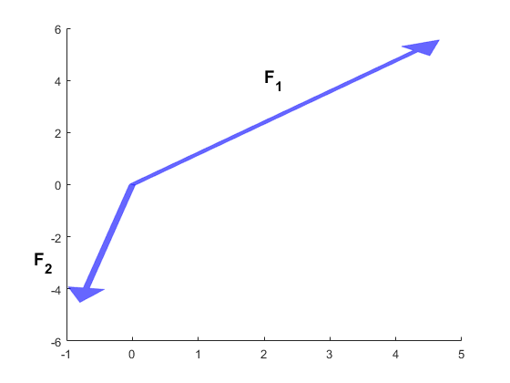

Oblique3
Contents
Loi du parallélogramme
En utilisant le vecteur F comme diagonale des 2 obliques, il n'y a qu'une façon de tracer les composantes selon la loi du parallélogramme en partant de l'origine du vecteur (0,0).
Tous les angles et un côté (F) sont connus. Utiliser la loi des sinus pour déterminer les normes des composantes.
% Triangle supérieur à F % Angle entre vecteur et ligne bleue : 50-15=35° % Angle entre lignes bleu et verte : 80-50=30° % C'est l'angle opposé au segment F. % Angle entre vecteur F et ligne verte : % 180-30-35 = 115 % C'est l'angle opposé à la composante recherchée. % sind(30)/mF = sind(115)/mF1 mF1 = sind(115)*mF/sind(30); F1 = n1*mF1; % Vecteur F1 Vecteur(Cloture,F1,[0,0],bleu); text(2,4,'F_1',... 'FontWeight','bold','FontSize',14); % Triangle inférieur à F % Angle opposé à F : 30° % Angle opposé à la composante no 2 : 35° % sind(30)/mF = sind(35)/mF2 mF2 = sind(35)*mF/sind(30); % la direction correspond à -n2 F2 = -n2*mF2; % Vecteur F2 Vecteur(Cloture,F2,[0,0],bleu); text(-1.5,-3,'F_2',... 'FontWeight','bold','FontSize',14); % la somme de F1 et F2 produit bien F.
